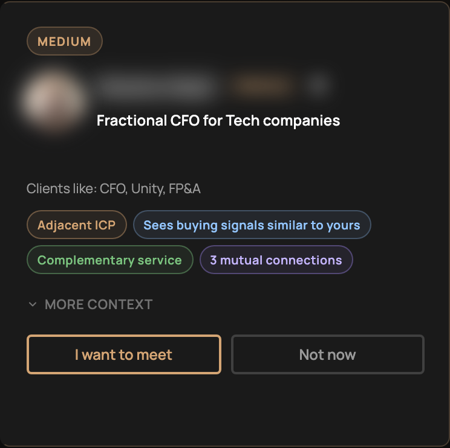
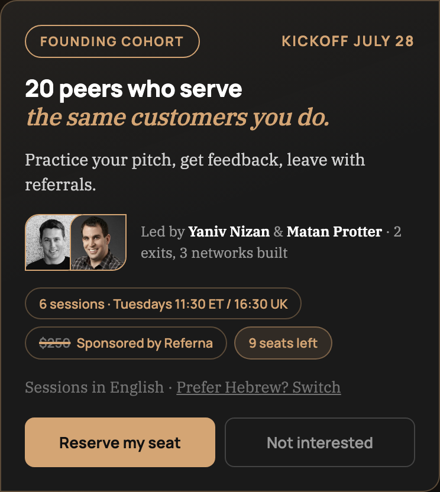
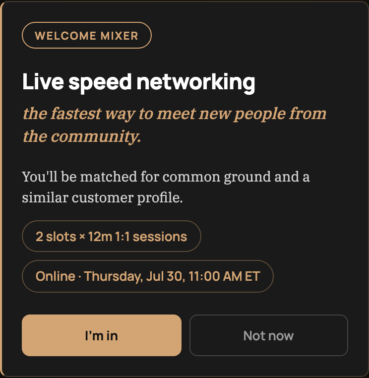
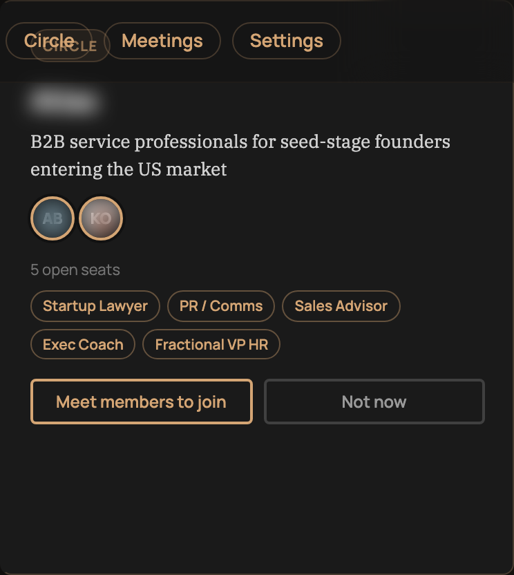

Three ways to meet. One destination: your circle.
The live product — every visual is a real screenshot (members blurred).
1 · Apply
10-minute application
Who you serve, what a great referral looks like, calendar connect. Gordy builds your profile.
→
2 · Meet your peers — three lanes

1:1 matches — mutual opt-in, Gordy books the call

Cohort — six weekly founder-led sessions

Live mixer — speed networking, shipping now
→
3 · Join your circle

8–12 peers who serve the same customer — and refer each other
Meeting the right peers is productized. The circle turns meetings into consistent referrals.
Sources: Referna app screenshots, production, July 2026 (member names blurred)